| 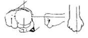 | Seiken | Parte anteriore del pugno (fondamentale). Colpisce la parte compresa tra nocche e la prima falange di indice e medio. |
| 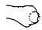 | Uraken | Pugno rovesciato (dorso del pugno). Colpisce il dorso della mano e la parte superiore delle nocche di indice e medio. |
| 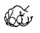 | Ippon Ken | Pugno con una nocca sporgente. Come il Seiken ma con la parte tra la prima e la seconda falange del dito indice che sporge frontalmente. Il pollice è premuto sul fianco dell’indice per rinforzarlo. |
| 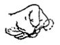 | Nakadaka Ken | Pugno con la nocca del medio sporgente. Come l’Ippon Ken ma il dito sporgente è il medio. Il pollice è piegato su indice e medio. |
| 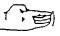 | Nukite | Punta delle dita (mano tesa). Ritraendo leggermente il medio si forma una superficie livellata con indice e anulare. |
| 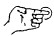 | Ippon Nukite | Nukite con un solo dito (indice). |
| 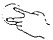 | Nihon Nukite | Nukite con due sole dita (indice e medio). |
| 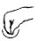 | Washide | Mano a becco d’aquila. Le punte delle dita sono premute insieme fino a sembrare il becco di un uccello. |
| 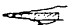 | Shuto | Taglio della mano (parte del mignolo). |
| 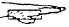 | Haito | Taglio della mano (parte del pollice). |
| 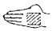 | Haishu | Dorso della mano aperta. |
| 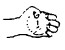 | Kumade | Mano a zampa d’orso (palmo). Le dita sono piegate all’interno fino a toccare il palmo con le punte. |
| 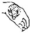 | Keito | Mano a testa di gallina (base del pollice). Il colpo si esegue con la parte tra la base e la prima falange del pollice. |
| 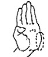 | Seiryuto | Base del taglio della mano (a sciabola). La mano è piegata lateralmente e spinta in avanti. |
| 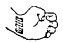 | Teisho | Base del palmo della mano. Si usa piegando la mano all’insù e indietro per colpire lateralmente o verso il basso. |
| 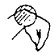 | Kakuto | Polso a testa di gru (polso piegato). Colpo eseguito con la parte curvata del polso partendo da Washide. |
| 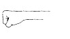 | Wan / Wanto / Shubo | Avambraccio. Nai Wan: lato del pollice; Gai Wan: lato opposto; Hai Wan: parte superiore; Shu Wan: parte inferiore. |
| 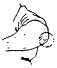 | Empi / Hiji | Gomito. |
| 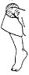 | Shittsui / Hizagashira | Ginocchio. |
| 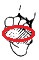 | Koshi / Josokutei | Punta del piede sotto le dita. Le dita sono rivolte verso l’alto. |
| 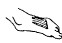 | Haisoku | Collo del piede. Il piede è piegato all’ingiù con le dita rivolte verso il basso. |
| 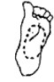 | Teisoku | Pianta del piede. |
| 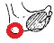 | Kakato | Tallone. |
| 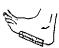 | Sokuto | Lato esterno del piede dalla parte del dito mignolo. |
| 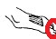 | Tsumasaki | Punta delle dita del piede. Le dita sono premute insieme per colpire con la punta. |